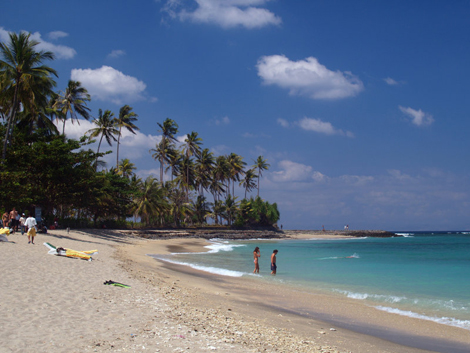

West Nusa Tenggara
Senggigi Beach
Senggigi is Lombok's oldest and most famous resort area.
A perfect place to relax, Senggigi boasts a series of white sandy beaches and safe swimming areas. The point at central Senggigi has good waves for surfers. This place has a colourful reef which provides shelter to a variety of marine life and exquisitely shapped coral and makes it a perfect place to snorkle.
In the dry season, there is an interesting variety of boats moored in the bay. The town of Senggigi spreads out along nearly 10 kilometers of coastal road. This road continues north to Bangsal, the port for the Gili Islands.
.jpg)
Gili Terawangan, Gili Meno, and Gili Air
White sandy beaches. Tropical coral reefs. Warm inviting waters. All this awaits you on the Gili islands. And with no cars, no motorbikes and no distractions other than beautiful tropical island scenery, the Gili islands off the northwest coast of Lombok are truly an ideal destination for a tropical getaway. Offering spectacular reefs and ominous dive sites like Shark reef, the Gili islands are the perfect escape for anyone wanting to get away to beautiful, natural and relaxing surrounds. This is why these islands have become a popular destination for Western tourists looking for a remote island experience. For divers and snorkelers, there are few places better than the Gili’s where you can get up close to all kinds of marine life including a green turtle (Chelonia mydas) in all its glory. Swim up and watch this graceful creature glide through the ocean. You should be able to spot these turtles at depths of 10-20 meter below sea level. The Gilis consist of three islands: Gili Trawangan, Gili Meno, and Gili Air. In local Sasak language, "Gili" means "island". In the Indonesian language, plural is denoted by repeating a noun. So "Gili Gili" literally means "islands”. Renowned for friendly locals and superb natural beauty, each of the island’s are well prepared for tourists. Gili Trewangan is the largest and most popular of the three islands. It has a vibrant nightlife to keep you entertained once the sun goes down. With a wide collection of restaurants and bars, you’ll never be short of entertainment here. If you're after a quiet getaway, try Gili Meno or Gili Air. Gili Air is closest to the mainland and is the most populated of the Gili’s. Gili Meno is the smallest island and, with only a few hundred permanent residents, it has the most remote feel to it. The Gili islands are easily reached by speedboat from Senggigi, taking only some 20 minutes boat ride. Many tourists also travel direct to Gili Trawangan by ferry that leaves Bali daily from Serangan or Padang Bai. Travel on the islands are only by bike or “cidomo” the small horse-drawn carts taking 3 persons per ride. No motorized vehicles are allowed here. There are plenty of hotels and restaurants built in keeping with the islands’ homely village atmosphere.
Mount Rinjani National Park
The mighty Rinjani mountain of Gunung Rinjani is a massive volcano which towers over the island of Lombok. A climb to the top is one of the most exhilarating experiences you can have in Indonesia. At 3,726 meters tall, Gunung Rinjani is the second highest mountain in Indonesia. The climb to the top may not be easy but it’s worth it, and is widely regarded as one of the best views in the country. Part of the famous ‘ring of fire’ this mountain also holds spiritual significance for the local people. It’s thought that the name Rinjani comes from an old Javanese term for ‘God’. Around the slopes of Rinjani there are lush forests sprinkled with waterfalls and surrounded by stunning scenery. Within the mountain is a crescent shaped lake, the breathtaking Segara Anak which is about 6km across at its widest point. This lake of sulfur is located 600 meters below the crater rim. Rising from the waters of this lake is a new volcano, Mt. Baru, which is a result of a series of eruptions during the 1990’s. Segara Anak is a spiritual place. The Balinese come here each year and perform a ceremony called pekelan where jewelry is placed in the lake as an offering to the mountain spirit. The Wetu Telu people also regard the lake as holy and come here to pray on full moon nights. Mt Rinjani lies within the Gunung Rinjani National Park. The park covers 41,330 hectares and sits inside a major bio-geographical transition zone (Wallacea). This is where the tropical flora and fauna of South East Asia meets that of Australasia. This National Park was established in 1997 and is one of over 40 throughout Indonesia. For visitors, the three-day Rinjani trek route from Senaru to the crater rim, down to the Crater Lake then on to Sembalun Lawang, is considered one of the best treks in South East Asia. More adventurous trekkers may want to head all the way to the summit of the volcano. This is best reached from Sembalun Lawang and takes four days, finishing up in Senaru. To ensure that local communities benefit from tourism revenue, the Rinjani Trek is managed by a partnership of National Park officials, the public and private sectors of the Lombok tourism industry and community representatives. Community run cooperatives coordinate the Trek at the Rinjani Trek Center (RTC) in Senaru and the Rinjani Information Center (RIC) in Sembalun Lawang. Revenue from tourism activities and entry fees is used for conservation, management and assisting the National Park with maintenance of the Rinjani Trek, thus ensuring its sustainability. This management model is unique in Indonesia and considered an example of best practice of ecotourism in Indonesia.